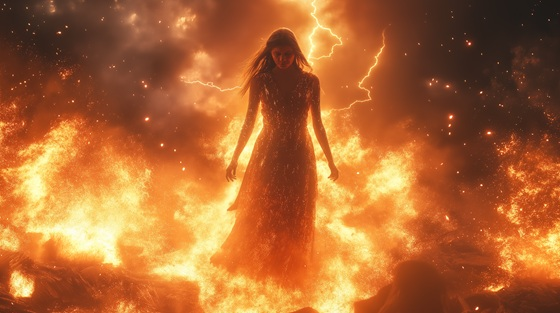

Semele, daughter of King Cadmus of Thebes, was beloved by Zeus. Persuaded (sometimes by Hera in disguise) to demand that Zeus reveal his true divine form, Semele’s mortal body was unable to withstand the sight. She perished in flames, consumed by the sheer power of his presence.
From her ashes, Dionysus was born—a god of wine, madness, and rebirth, rescued and carried to term in Zeus’s own thigh.
This song captures Semele’s desperate longing to be fully loved and fully seen—even if it meant her destruction.
Touched by Flame
He came in storm, he came in gold
With whispered love too fierce to hold
I called him lord, I called him mine—
And asked to see his secret sign
No veil, no lie, no stolen breath—
I craved the truth that bore my death
Touched by flame, kissed by sky
I loved a god and chose to die
His name was fire, his gift was pain—
Yet still I call that golden rain
The skies split wide, the heavens burned
The mortal flesh I bore was turned
To ash and light, to dust and sound—
And through my bones, the stars unwound
No crown could save, no prayer could hide—
The cost of love that gods denied
Touched by flame, kissed by sky
I loved a god and chose to die
His name was fire, his gift was pain—
Yet still I call that golden rain
Yet from my pyre a seed survived—
A boy of wine, of rage, of drive
Dionysus, child of woe—
Was born from death the gods did sow
SEMELE: “Better to burn in a god’s embrace than to wither in a mortal's shadow.”
Touched by flame, kissed by sky
I loved a god and chose to die
Yet through my ash, through endless rain—
The wine of gods still bears my name
In fire I wept, in fire I rose—
The heart remembers what it chose